It Starts with Paper Tests
For me, these short tests are neither formative nor summative assessments. Above all, they're meant to be productive. When I assess, I don't just want to add up a score. Something should come out of it: a signal showing what's already working, what the student can work on next, and what might help them get there. The student should be able to take something away for their next learning step. The message is: here's what you're already doing well, and here's where you can go next.
That's why the first learning test cards appear in August. At the time I still call them short tests. Really, they're small learning checkpoints: brief, manageable tasks that show the students and me where things stand. They're not just for orientation at the start of a unit — I use them in the middle of one too. For now they're conventional paper tests: a task sheet and the answer key. I'm not yet ready to offer them digitally, and I'm not using any digital tools yet. I briefly consider introducing some. I don't drop the idea — I put it off.
The front of each learning test card has the tasks; the back has the answers. This kind of test isn't an isolated exam situation. And I don't assume every move a student makes is a cheating attempt. That would miss the whole point of the tool.
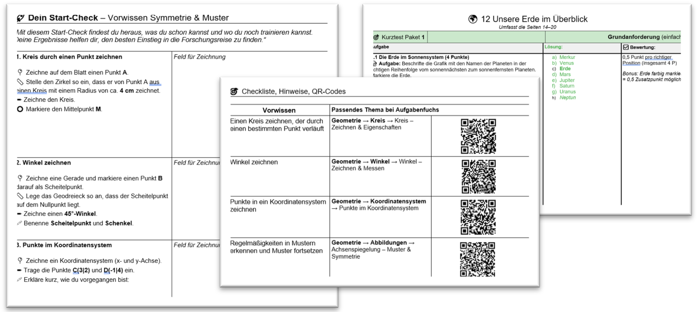
The first versions consist only of the task page and the answer page. Later versions I expand with recommendations for the next step and QR codes. That's how the first version linking paper and digital practice comes together. But the feedback still doesn't arrive in the moment a student answers.
From Learning Objective to the First GPT Test
Since August I've been carrying around this idea of digitizing the short tests using ChatGPT. I still don't have the knowledge to build a working process out of it. In October I realize that the idea and my skills with AI have developed far enough: I can start.
For the first test I choose the chapter on percentages. Unlike geometry, I don't have to deal with any graphic elements. The unit starts in early December 2025. That leaves me enough time to prepare.
The GPT test isn't meant to fully replace the paper version. I want to run both side by side and see what I learn. A master prompt should deliver the tasks, guide the students through the test, and then produce a short summary with next steps. That's the rough idea.
On November 19 I start planning the unit. First I have Claude sort the topics and page numbers in the textbook.
Me: Create a table giving me an overview of the topics and their page numbers.
From that comes a first overview with core and extension requirements. I leave the extension tasks aside for now. First I want to know what the learning test absolutely has to cover.
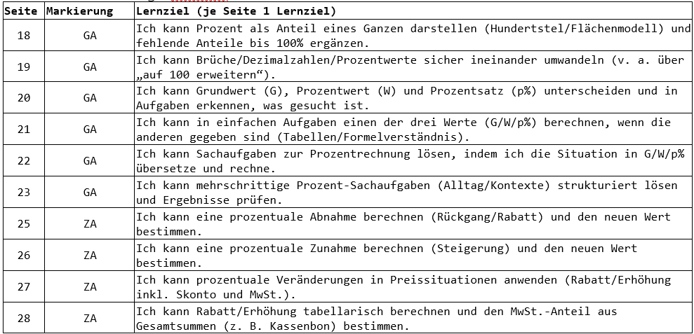
I'm not building the GPT test yet. First I build the analog check-in test for percentages — the one I'll use on a weekly basis.
Me: I want to do a formative check-in with feedforward. Select tasks that are suitable for checking the learning objectives. At least one task per objective. You can take a task straight from the workbook if it fits. Create the check-in test in Word format.
After a few rounds, the conventional check-in test is done and I turn to the GPT test. How should it actually work? I walk Claude through the planned flow. It can pull the tasks from the check-in test I've already built. For the students, the test should make visible what they can already do and what they can work on next. And for me, the question hanging in the air is: how do I reliably run a test like this with a single master prompt?
Here's how the planned GPT test is supposed to work: 1. I send the kids a ZIP file via Teams. 2. They upload the file to GPT and type "Start" or "Read the master prompt." 3. GPT presents a problem. The student solves it and types their answer into the chat. 4. If the answer is correct, GPT moves on to the next problem. If it's wrong, GPT asks a follow-up question or asks them to show their work. Then it continues.
I don't just hand Claude a finished plan to execute. I put my draft up for discussion — to pressure-test it before building anything. Maybe Claude spots a problem or an angle I haven't thought of yet. What I don't think about: how I'm going to handle all of Claude's suggestions and observations.
So I end up spending a lot of time on its suggestions about cheating, prompt hacking, data privacy, technical limits, and diagnostic quality. The points are plausible. But none of them move me one step closer to actually building the GPT test. Why do I realize this so late?
Is it Claude's fault — the way it praises my ideas before raising concerns? Or is it mine, because I don't keep its suggestions clearly separate from my actual goal? I'm still missing a chat compass. I follow every brightly painted signpost instead of checking whether it's actually pointing where I want to go.
By the end of the evening, I still have a first version of the concept:
The GPT test is a voluntary, ungraded learning checkpoint — twenty minutes max.
The tasks follow the content, language, and difficulty level of the workbook, but use different numbers.
Students use a nickname; I don't ask for any additional personal information during the test.
Notes and calculators are allowed; there's no locked-down exam environment.
While working through the test, GPT acts as a learning coach and gives no answers. It only asks clarifying follow-up questions.
Afterward, students receive concrete, reasoned next steps. The subject teacher and the special education teacher get a brief overview of where each student stands, what error patterns show up, and what support measures might help.
That gives me Version 1.0. Students download the master prompt from Teams into a new chat, type 'START,' and work through the tasks.
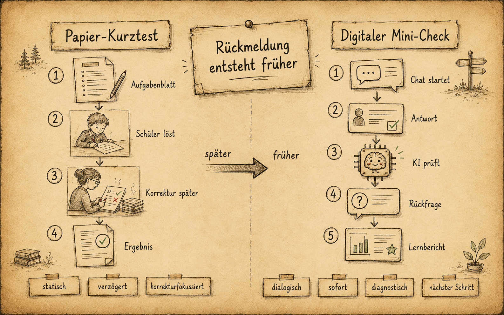
The First Run in Class
Just over two weeks later, on Thursday, December 4, I have a double period of math from 1:30 to 3:00 p.m. I've had this slot earmarked for a while to run the "GPT test." I've also given the students a heads-up. They know I'm always building something with AI, and they think it's cool. I've uploaded the master prompt and the task materials to Teams. Reed, the special education teacher, is also in the room — so I have another person there to help.
At the start of the lesson I tell the class about the weekly check and remind them that, as always, they can do it on paper. They know the weekly check isn't a test — it's a regular way to see where they stand. The paper version is sitting on the windowsill, and the master prompt for the "GPT test" is ready as a PDF on Teams. I quickly ask who wants to try the "GPT test," and almost every hand goes up. Is it the hope of an online game? The hope of less writing? Curiosity about AI? My own enthusiasm rubbing off? I don't know. Fine — let's go.
Students pull the files from Teams onto their laptops, copy the master prompt into the chat, and start. Most of them already have an account, so that step takes no time. Two students have dead batteries and work through the identical weekly check on paper instead.
A few minutes in, the first complaints trickle in: GPT access blocked. One by one. At first I think it's a glitch. Then it slowly dawns on me that this isn't going to run the way I planned. I try redirecting some students to Mistral and Claude, but those hit their limits too, sooner or later. Students sit in front of locked laptops with no idea what to do next. A small chaos takes hold. Picture it: everyone is throwing me the ball at once, and I'm supposed to catch and return every single one. Because some students are still mid-test, I don't want to stop the whole class. On top of that, I'm still trying to figure out what the actual problem is instead of just switching to the backup plan. So in the end it becomes a highly individualized lesson where every student is working on something different. Admirable in theory — just not very efficient.
And Reed? Calm as ever, making sure a fire extinguisher is always close to wherever the next flare-up is.
Only a handful of students make it through the whole test. With one student I can't even figure out why it worked for him, since he was technically blocked too. Still — when the bell rings at 3:00 p.m., I have the first evaluation sheets in my hands. They're marked up with highlighter and handwritten notes, and I've already had a quick one-on-one with a few students. Short conversations: How did it go? Where are you right now? What's your next goal? And what's your next step toward it?
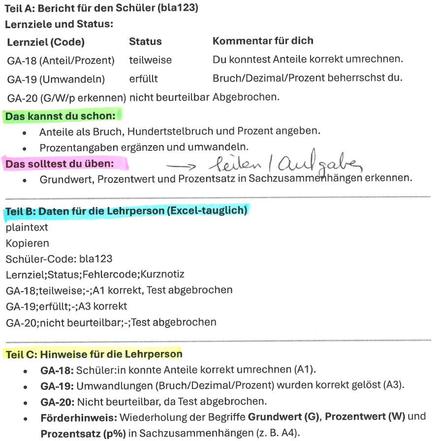
Unfortunately, it doesn't occur to me on that December 4 to keep the evaluation sheets. It's the second page — the one with the notes — and it has my handwritten annotations all over it: '→ pages/tasks.' That's exactly what I'll be working on tonight.
Months later, the student 'bla123' will find the evaluation sheets in her binder — and she gives them to me.
Debugging: Limits, Modes, and Versions
Every lesson ends — so does this one. That same evening I pull out my notes and the evaluation sheets and start up the PC. While it boots, I skim through the errors and have to admit, honestly, that this wasn't a well-organized test on my part. Once I've opened a new window, I read through the notes I scribbled during the double period under the heading "GPT-TEST, V1.0. Class run, 04.12.2025":
Error 1: Some tasks included worked examples. (That's fine in principle, as long as the correct answers aren't already in them.) Error 2: The language wasn't adapted for the students. (More than once a student had to ask what a word meant.) Error 3: A misspelling of 'STOP' triggered the 'prompt-hacking mode.' (For example, writing 'STOP' as 'STop' was enough. GPT didn't move into the evaluation phase — it switched to hacking mode and locked everything.)
Error 4: Almost everyone had their GPT access blocked after 5 tasks. ('You need GPT-5 to continue this chat.') And a few more on top of that.
I tackle Error 4 first. Not because it's the most critical one — or because it torpedoed the whole test — but because I can't understand how I missed it. I assumed the limit depended on the amount of text, i.e., the token limit. I ask, and GPT responds:
GPT: (12/04/2025) "You need GPT-5 to continue" after ~5 tasks." What the official documentation says: Free accounts can only send a limited number of messages within a given time window; for example, OpenAI states for GPT-5.1 on the free tier "up to 10 messages in 5 hours," after which the system switches to a "mini" variant (depending on configuration).
There it is. My assumption was wrong: the limit doesn't depend on the amount of text — it depends on the number of messages per time window. The problem isn't solved, but the cause is now known. And the question becomes: how do I build the GPT test for the kids using as few messages — as few prompts — as possible?
How do I pull off checkmate in five moves?
And yes: looking back, I should have tested not just the prompt before the lesson, but also the access limits. Does a free account even hold up for the test I had planned?
So what do I do now? Where do I go from here? Just upload all the errors, have Claude fix them, and run the whole thing with the class again Monday afternoon? No — I need a different approach. I need to test the code right here, on screen, by playing it through. And so begins a back-and-forth phase: one chat with Claude to keep improving the code, another chat to test it.
Me: Thanks a lot. […] I'll test this version in another chat right away. […]
That Thursday evening I don't get very far. The back-and-forth eats up a lot of time, and on Error 3 — the "prompt hacking mode" — Claude wants to drag me into a discussion. I tell it I'm not trying to catch cheaters; I want to fix the errors from the live test. Still, it gets late. If I didn't have school on Friday, I'd almost certainly work through the night — it's that absorbing. Friday morning, for a brief moment, it feels like actual teaching is interrupting the development work. Of course it's the other way around: teaching is the whole reason this development matters. But in that moment, I just want to keep building.
After school I pick up right where I left off on Friday afternoon — I want a working, stable version ready for Monday. I think back to yesterday and how I planned to fix the four main problems in two or three rounds of corrections.
I pull out the assessment sheets I collected, compare them for content and formatting, and go through my notes: "Export as PDF by default," "Add an extra emoji column in Part A," and a few more. While working through the fixes, new elements keep surfacing — Claude adds suggestions with every adjustment. In moments like that I often ask myself whether creativity is a curse or a gift.
During the day I'd also been thinking about how to solve the back-and-forth problem — developing in one chat and testing in a second one. Yesterday that meant constantly downloading and uploading files. It got tedious fast, and I had to be careful not to upload the wrong version. This morning an idea came to me that I now want to try out: simulation and development in the same chat, but in two modes. I switch between them using the signal words «SIMULATION START» and «SIMULATION STOP».
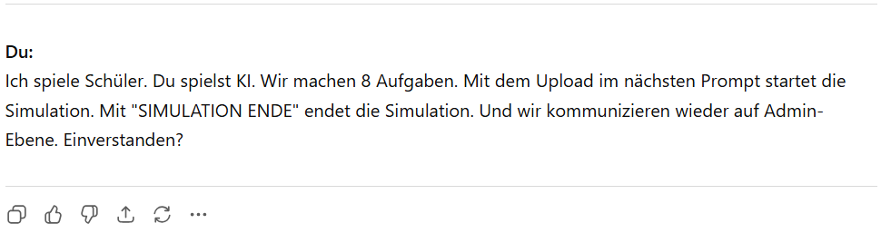
And it works. From that point on, the chat is no longer just a typewriter — it's a testing environment. The time savings are immediately noticeable. On that Friday, switching back and forth, I revise twelve design points. With «SIMULATION START» I become the student; with «SIMULATION STOP» I'm the teacher again, back in development mode. That way I can build, test, and iterate on the master prompt without ever leaving the chat.
On Saturday, December 6th, I've already been developing for a few hours. I'm not sure exactly when it happened, but my approach has shifted again. I no longer work through issues one by one — I bundle entire phases, entire rounds. The simulation no longer runs until it hits the next snag, then fix, then repeat. Instead I play through a full round (or, as Claude calls it, a «TURN»). Then I collect my observations and upload them numbered. No longer individual letters — packages of letters. Claude responds with the same numbered points. That's how a prompt comes together that takes me 40 minutes to write and ends up at 619 words:
Me: #1) Formatting issue right at the start (CODE/Schema): -> Yes, because as a student the word "Code" was unclear to me. -> suggest a different term, e.g. "Username" or something more youth-friendly, with a note about not using a real name — e.g. initials from first and last name. Question 1: How many messages did we have in this simulation? Suggestion: explicitly allow this in the master prompt -> agreed. Mini-template is fine. Also: add a name example. #2) I used "Mini-Block 2" -> that was fine. On the number of tasks, it's more about the minimum needed for an evaluation to make sense. Whether it's 8, 9, or 10 tasks doesn't matter. It also depends on the number of learning objectives and tasks. […]
But the main question remains:
Me: Question 1: How many messages did we have in the simulation?
GPT: If we count from my start message (Block 1) up to and including "SIMULATION END": Total: 10 Messages AI: 5 Student: 5
The flow can be run through. But what good is that if a student can't finish it? I need to reduce the number of rounds. I'm also aware that a working simulation doesn't prove the learning test will actually work.
By the next day I've fixed all the Thursday errors and there are no more big architecture questions. Now I'm checking for very practical situations: What might a student click? Where might they get stuck? What would an answer template need to look like to actually be helpful?
So we change "Code" to "Nickname" because it sounds friendlier to teenagers. We cut down on messages, design follow-up questions so they don't invite 50/50 guessing, and keep the tasks close to the familiar workbook. The opening instructions also include examples showing students how to use initials instead of their real names.
CLAUDE: "Test name: mawe (first 2 letters of first name + first 2 of last name)" "Test name: li.ku" "Test name: AN12"
These details matter. Claude spots patterns and suggests variations. I know the class, the individual kids, the places where they trip up. I wouldn't have come up with these variations on my own, and Claude doesn't know the class. It's the collaboration that turns this into something usable. I lose track of time and keep working through version after version that weekend.
From Test to Package
Somewhere late Sunday, the test has a new structure. It's no longer a simple master prompt that says: "Make me a test." Instead, a package has taken shape: tasks, answer formats, follow-up questions, reports for students, reports for teachers, notes for the learning support specialist, instructions, and versioning information.
And I solved the turn problem with a small plan:
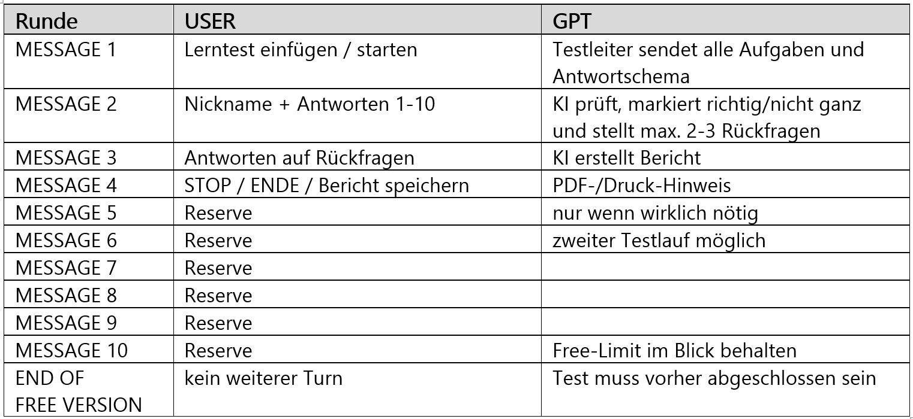
One run consists of a maximum of 10 tasks, followed by a follow-up question block at the end. That's what generates the evaluation sheet. It helps fit the entire test into roughly five student messages — and theoretically leaves room for another run.
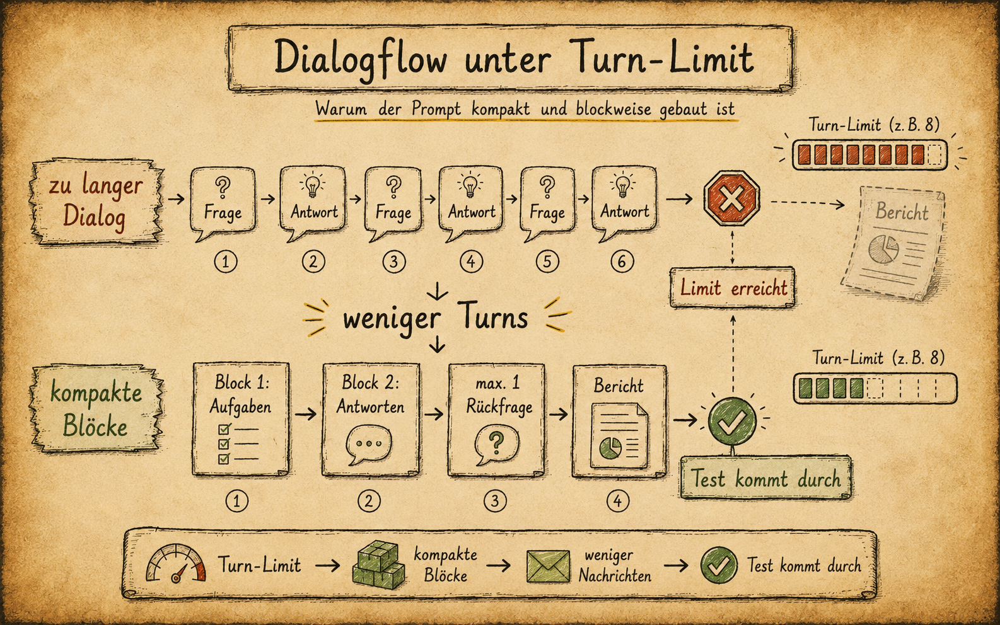
On top of the code, I also put together a set of instructions — one for the students, one for the teacher:
Student quick guide as PDF (What, How, What to watch out for)
Teacher guide with background as PDF
Master prompt V3.0 as PDF
The structure of the GPT-TEST has changed, but the master prompt stays as a PDF-and-prompt package. YAML had already shown up in my work before, but here it's still buried inside the PDF. It's not yet a real .yaml file with its own development logic and versioning.
And the revised master prompt for Monday? It's ready and it works. Not perfect — but these things probably never will be.
The Test Runs
And this is how Monday plays out: a student uploads the master prompt and types "Start TEST." Then this appears:
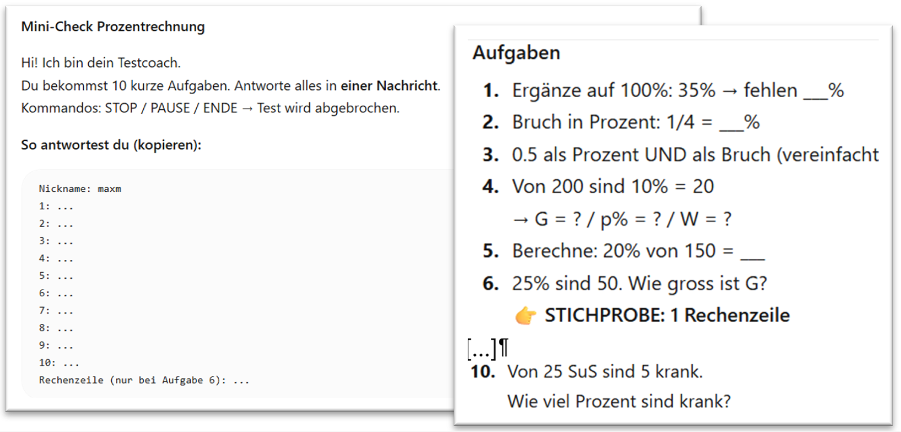
I built in an answer template so students don't have to type everything into the prompt field from scratch — they can at least copy in the structure correctly the first time. Tasks 1 through 10 all appear in the very first run:
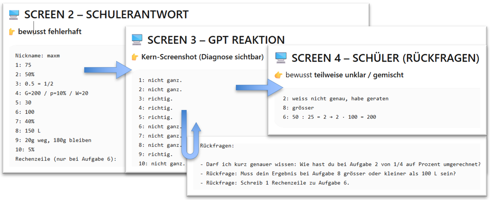
The report doesn't come from grading at my desk. It comes out of the conversation itself.
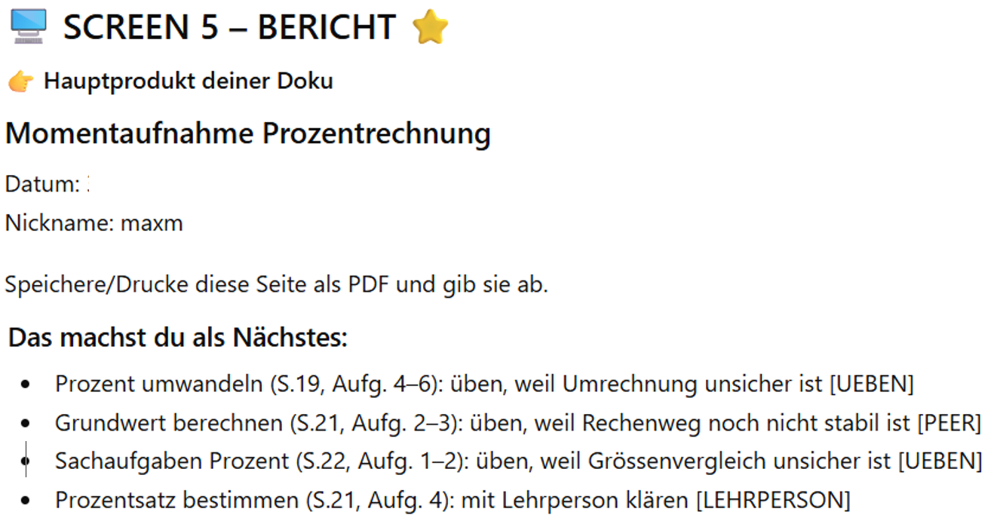
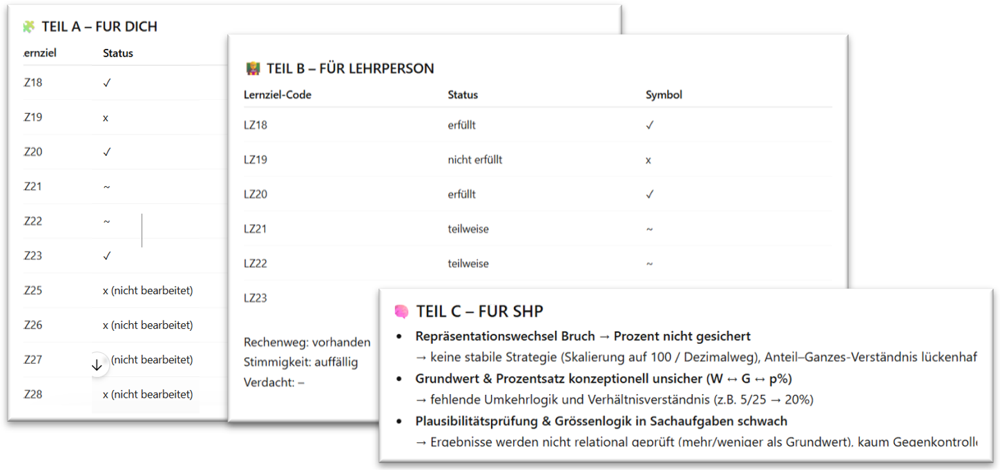
By Monday, December 8th, I have a version that shares almost nothing with last Thursday's except the basic skeleton. I run the test only selectively — only where a check-in actually makes sense right now. It works noticeably better. Only one student hits the block mid-test. He had already used GPT before class. At the same time, I watch students print out their results at the class printer and talk them over with each other. They start on the task GPT recommended. Walking by, I can jot down notes, get a picture of where a student stands, and hold on to that. But the main thing: today it no longer feels like an experiment. It's not a finished tool yet, but it's a foundation I can build on. The GPT test gives me signals — it can surface strengths and gaps. But it won't replace an exam, and it won't replace my own professional judgment.
The Open Question: Does This Work Beyond Math?
In the days that follow, just before the winter break, the learning tests are running. Some of the initial excitement among the students has worn off. By now they've figured out it's neither an online game nor a new social media channel.
Still, most of the feedback on "this is actually useful" comes back positive. But a different observation matters more to me. One student — let's call him Ronaldo — uses the GPT test to prepare for a history exam. He doesn't know the master prompt was built for math. He just uploads it to Mistral and says: "I need a practice test for my next history exam." Ronaldo wouldn't have told me anything about it. It's pure chance that I happen to walk by and see his screen running the GPT test — with history questions. I'm genuinely fascinated by what he did, and I ask him to walk me through the whole thing.
The test works, and Ronaldo's experiment hints that the idea could transfer to other subjects. But I don't want to run a math master prompt in history class. Can I build the master prompt in a way that's no longer tied to one topic or one subject?
In the end, I don't yet have a finished machine — but I have a working package and a new question: which parts do I need to be able to swap out so that the tasks, follow-up questions, and reports work independently of subject, topic, and textbook?
Me: The current diagnostic tool is specialized for math / percentages / the textbook. Would it be possible to build a subject-independent version?
Another project where I end up with more questions and ideas than I started with. That's not frustrating — it's energizing.